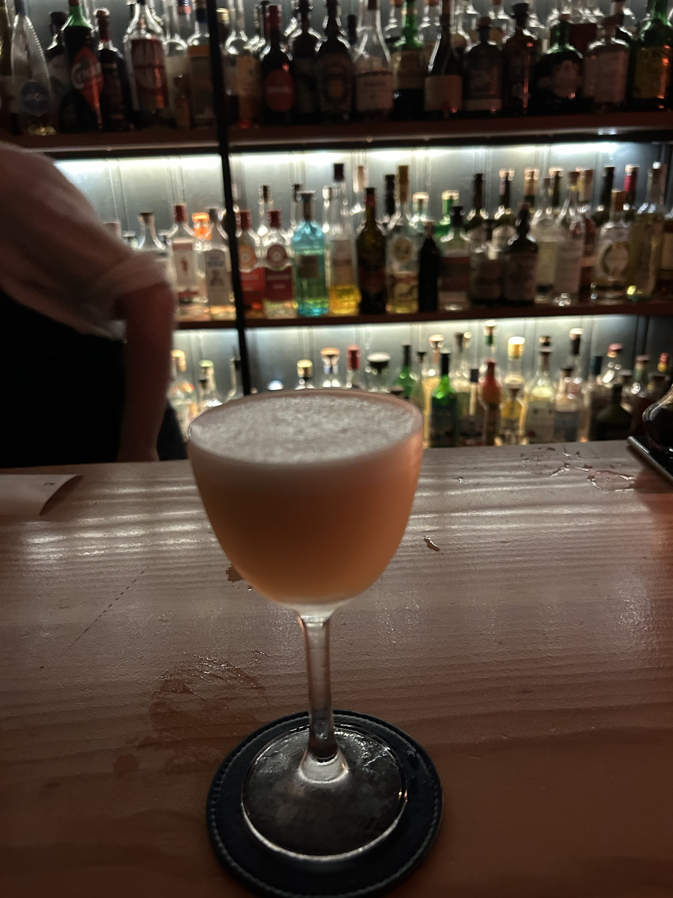
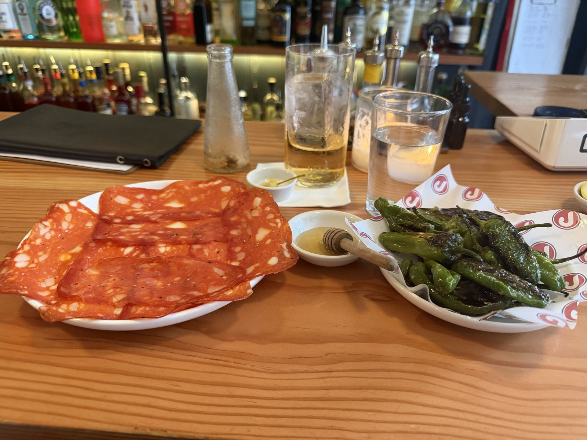

“The strawberry adds a nice bit of freshness, fruitiness, and sweetness that you don't normally find with Negronis.”
What I drank / 01
White Strawberry Negroni
Ingredients
London Dry Gin · Wild Strawberry Vermouth · Bitter Bianco
The profile
Light pink color. Dehydrated strawberry garnish.
My thoughts
A fun riff on a White Negroni. In fact, I think the first riff I've seen of a White Negroni.
The strawberry adds a nice bit of freshness, fruitiness, and sweetness that you don't normally find with Negronis. Still very bitter and dry.
For me, a really solid option to have on the menu. I was a fan.

“Tart and punchy.”
What I drank / 02
Delicious Sour
Ingredients
Calvados · Peach · Lemon · Bergamot · Aquafaba
The profile
Peachy color, frothy.
My thoughts
I'm coming around on brandy. Pair it with one of my favorite flavors in peach, and one of my favorite cocktail ingredients/scents in bergamot... we're onto a winner.
I am always in the mood for a sour. Easy to drink, tart and punchy. Can't go wrong.
The Space
A fantastic Italian bar/bistro in the heart of Edinburgh. Specializing in Negronis, but with plenty more to choose from.
They also have a small bites menu consisting of what can easily be described as Italian tapas. I didn't eat, but I actually recommended this bar to my parents when they visited Edinburgh recently, and they ordered some salami and peppers, which looked fantastic (I'll put the picture in the Extras).
Lovely back bar, a handful of bar seats, and some tables if you wanted a bit more of a meal. Bright, open-air, felt very European.
I often don't go to bars till the sun's down, but I went early here, and I think that was the right choice.
A really enjoyable bar.
Extras
When I got sent this picture, I regretted not getting food haha.

My Verdict
8.1 / 10Taste
8.3 / 10Atmosphere
Taste reflects what I drank. Atmosphere reflects the bar experience.